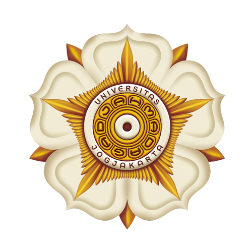

Kabupaten Kudus
Kabupaten Kudus dikenal sebagai Kota Kretek dan merupakan salah satu pusat sejarah serta kebudayaan di Jawa Tengah. Wilayah ini terkenal dengan Menara Kudus, peninggalan bersejarah bercorak Islam dan Hindu yang menjadi simbol toleransi budaya. Secara administratif, Kabupaten Kudus terbagi menjadi sembilan kecamatan dengan tingkat kepadatan penduduk yang cukup tinggi.
